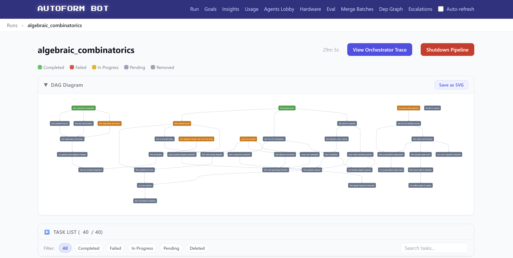
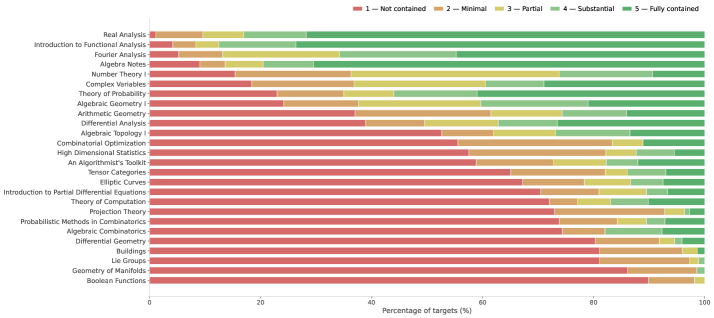

Builds AutoformBot multi-agent system producing Atlas, a verified library of 45,000+ Lean 4 declarations from textbooks.
Abstract
We present AutoformBot, a multi-agent system for building an Autoformalized Textbook Library At Scale (Atlas) in Lean 4. AutoformBot orchestrates thousands of LLM agents, equipped with formal verification tools, dependency-aware task scheduling, and collaborative version control, to translate informal textbook prose into machine-checked definitions and proofs. We apply our methods to a corpus of 26 open-access textbooks spanning analysis, algebra, topology, combinatorics, and probability, producing Atlas: a verified library of over 45,000 Lean 4 declarations and 500 thousand lines of code. We release two artifacts: (i) AutoformBot, the open-source multi-agent framework; and (ii) Atlas, the resulting formal library. Our results suggest that autoformalizing the core content of graduate-level mathematics at scale is now economically and technically feasible. This opens the door to the automated verification of both human- and machine-generated mathematics at a research level.
Problem
As LLMs accelerate production of mathematical reasoning, verification becomes a bottleneck. Peer review cannot scale to check every step, and prior autoformalization work targets isolated theorems rather than systematic textbook-level formalization.
Approach
AutoformBot is a multi-agent system that orchestrates thousands of LLM agents (powered by Opus 4.6) with formal verification tools, dependency-aware task scheduling via a DAG, and collaborative version control to translate informal textbook prose into machine-checked Lean 4 definitions and proofs. The pipeline has three tiers: a high-level orchestrator that plans from mathematical structure, mid-level agents for learning and evaluation, and low-level workers and reviewers. It was applied to 26 open-access textbooks spanning analysis, algebra, topology, combinatorics, and probability.

Figure 4 : The graph of tasks of a formalization attempt, as shown by AutoformBot ’s visual interface.
Results
The system produced Atlas: a verified library of over 45,000 Lean 4 declarations and 500 thousand lines of code across 26 books. Per-book formalization rates range from about 41% to 97%, with the overall corpus comparable in scale to mathlib. Human involvement was minimal, typically limited to occasional general advice.

Figure 5 : For each statement within each book, we estimate its difficulty in terms of how much infrastructure required to formalize it is missing from mathlib , and report these statistics for each book. The rubric used for this estimation is provided in Appendix 10.5 .